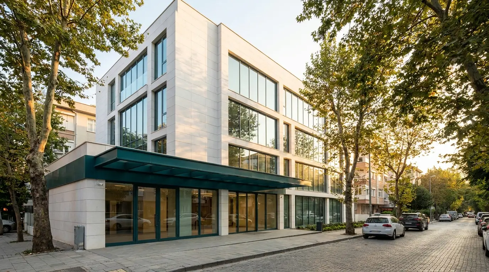

Hakkımızda
1998'den bu yana Bakırköy'de; muayene, laboratuvar ve görüntülemeyi aynı çatı altında sunan, semtin sağlık ihtiyaçlarına yakın bir tıp merkeziyiz.
Semtinizde köklü bir sağlık adresi
Özel Avrupa Tıp Merkezi, 1998 yılında Bakırköy'de hizmete başladı. Kuruluşumuzdan bu yana amacımız; büyük hastanelerin sıra ve mesafe yükü olmadan, semt ölçeğinde kişisel ilgiyle tam donanımlı sağlık hizmeti sunmaktır.
Merkezimizde 14 tıbbi birim, kendi laboratuvarımız ve görüntüleme ünitemiz aynı bina içinde yer alır. Böylece muayene, tahlil ve görüntüleme çoğu zaman tek ziyarette tamamlanır; birimler arası yönlendirme merkez içinde yapılır ve kayıt bilgileriniz tekrar tekrar istenmez.
Bu sayfadaki kurum bilgileri, hekim kadrosu ve görseller örnek tasarım sunumu kapsamında temsilidir; yayın öncesinde kurumun resmî bilgileriyle güncellenecektir.

Misyonumuz ve vizyonumuz
Hizmet anlayışımızı belirleyen iki temel taahhüt.
Misyonumuz
Semt sakinlerine; ulaşılabilir, zamanında ve kişisel ilgiyle sunulan sağlık hizmeti vermek. Muayene, tahlil ve görüntülemeyi aynı çatı altında toplayarak hasta yolunu kısaltmak, hekim–hasta iletişimini merkeze koymaktır.
Vizyonumuz
Bakırköy ve çevresinde, güvenilirliği ve hasta memnuniyeti anlayışıyla ilk akla gelen tıp merkezi olmak; hasta hakları, mahremiyet ve kalite standartlarını sürekli geliştiren bir kurum olarak hizmet vermeyi sürdürmektir.
Özel Avrupa Tıp Merkezi
Aşağıdaki değerler kurumu tanıtan temsili göstergelerdir.
Bizi tanımlayan ilkeler
Her ziyarette hissedilmesini istediğimiz dört temel değer.
Güven
Hekim kadromuzun eğitim ve uzmanlık bilgileri şeffaftır; bilgilendirme içerikleri ilgili branş hekimince hazırlanır.
Erişilebilirlik
Toplu taşımaya yakın konum, kapalı otopark, telefonla ve WhatsApp ile kolay ulaşım; herkes için erişilebilir hizmet.
Aynı gün sonuç
Rutin biyokimya ve hemogram tetkikleri merkez laboratuvarımızda çalışılır; sonuçlar çoğu zaman aynı gün hekiminize ulaşır.
Hasta mahremiyeti
Kişisel ve sağlık verileriniz KVKK'ya uygun biçimde işlenir; muayene ve işlem süreçlerinde mahremiyetiniz esas alınır.
Hasta haklarına ve KVKK'ya bağlılık
Merkezimiz; Sağlıkta Kalite Standartları (SKS) ve ilgili sağlık mevzuatı çerçevesinde hizmet vermeyi ve hasta haklarını gözetmeyi temel sorumluluk olarak kabul eder. Bilgi alma, mahremiyet, rıza ve hekim seçme başta olmak üzere hasta haklarına ilişkin ilkeler Hasta Hakları ve Sorumlulukları sayfamızda ayrıntılı olarak yer alır.
Kişisel verilerinizin işlenmesi 6698 sayılı Kişisel Verilerin Korunması Kanunu'na (KVKK) uygun biçimde yürütülür. Sağlık verileri "özel nitelikli kişisel veri" olarak kabul edilir ve işlenmesinde açık rıza esas alınır. Ayrıntılar için KVKK Aydınlatma Metni sayfamızı inceleyebilirsiniz.
Bu sayfadaki tüm bilgiler örnek tasarım sunumu kapsamında temsilidir ve yayın öncesinde kurumun resmî belgeleriyle güncellenecektir.